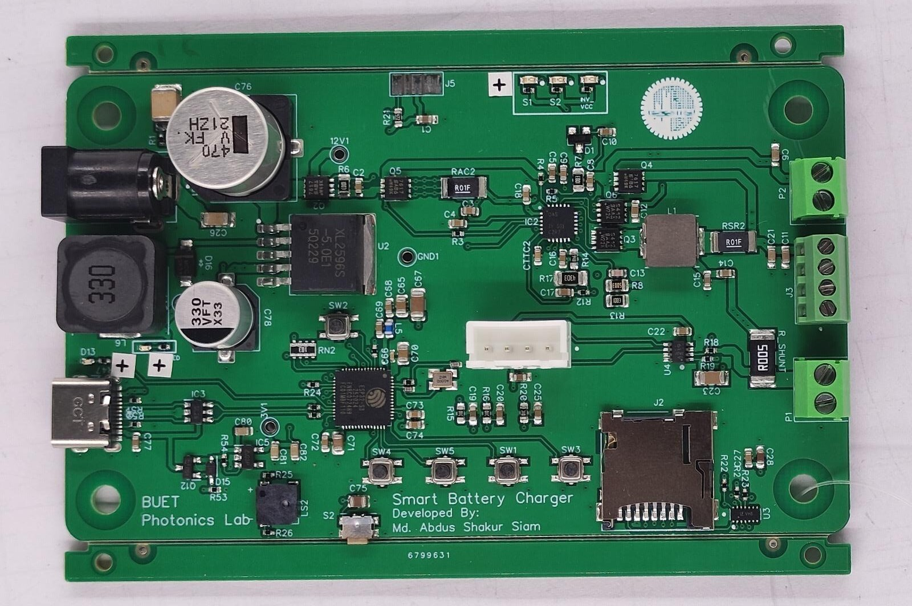
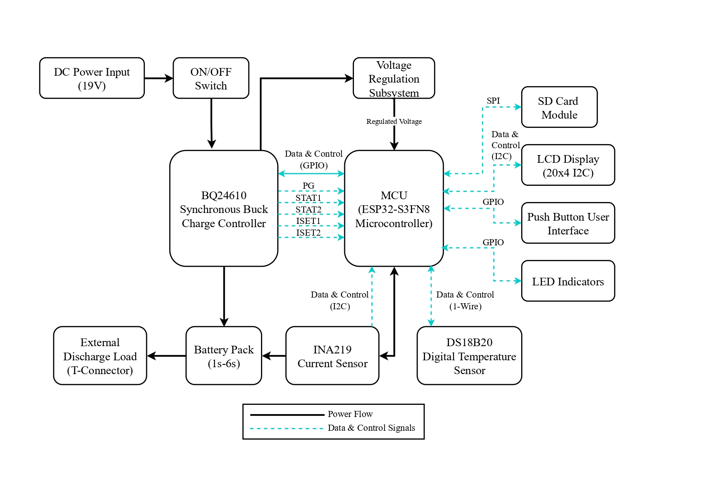
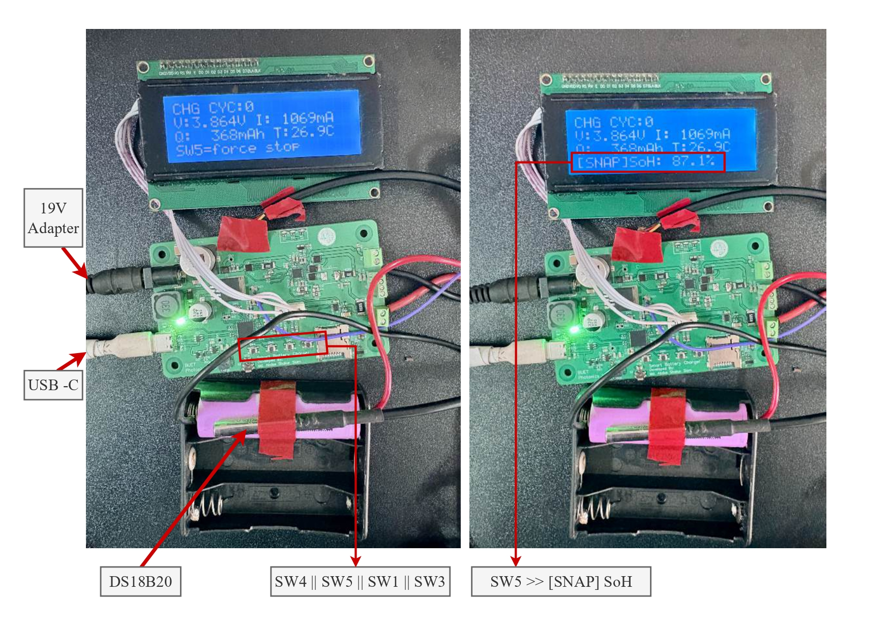

Edge-SBC: Hardware-Software Co-Design for Battery Prognostics
Custom Synchronous Buck Charging Platform with Real-Time Float32 On-Chip State-of-Health (SOH) Inference.
System Architecture & Hardware Specifications
The Edge-SBC board bridges power electronics with machine learning inference at the extreme edge. Rather than relying on cloud telemetry or heavy embedded neural network runtimes, the system pairs a high-frequency autonomous buck charger with an ESP32-S3 host MCU running native C-transpiled model trees.
| Subsystem | Hardware Implementation & Operational Parameters |
|---|---|
| Buck Controller | Autonomous 600 kHz NMOS-NMOS synchronous buck controller (Texas Instruments BQ24610RGER) executing autonomous 3-phase CC/CV regulation without host CPU intervention. |
| Host MCU | Espressif ESP32-S3FN8 (Dual-Core Xtensa® LX7 @ 240 MHz, 512 KB SRAM, 8 MB Quad-SPI Flash). |
| Current & Voltage Telemetry | High-side precision current shunt monitor (INA219 / INA238) reading an in-line 5 mΩ 2W shunt (R005) with 12-bit ADC, 10 µV/LSB resolution, achieving 2 mA current measurement up to 8 A range. |
| Thermal Monitoring | 1-Wire digital thermometer (DS18B20) with ±0.5 °C accuracy mounted directly on the battery cell casing. |
| Power Switching & Power Path | Dual high-performance low-RDS(on) N-channel power MOSFETs (SI7617DN-T1-GE3); step-down regulation via XL2596S-5.0 and low-noise AP2112K-3.3 LDO. |
| Cell Chemistries Supported | Configurable 1S to 4S Li-ion/LiPo packs (4.2 V to 16.8 V) selectable via hardware jumper matrix and programmable ISET1/ISET2 charge current dividers. |
| Firmware Architecture | Preemptive FreeRTOS state machine (idle → precharge → cc_charge → cv_charge → terminate) with batch-buffered SPI micro-SD logging (32 records/batch). |
On-Device Machine Learning Pipeline
To maintain real-time execution within strict microcontroller power envelopes, the inference pipeline bypasses standard high-overhead ML frameworks (e.g., TFLite Micro, CMSIS-NN) in favor of direct algorithmic transpilation.
soh_model.h).
Hardware & Experimental Gallery




Related Manuscript
"Edge-Deployed Battery State-of-Health Estimation on a Custom Synchronous Buck Charging Platform: A Cross-Dataset Lightweight Machine Learning Framework" — Md. Abdus Shakur Siam, Muhammad Anisuzzaman Talukder. Under Final Review, Elsevier Journal of Energy Storage (2026).
→ View Paper Abstract & BibTeX